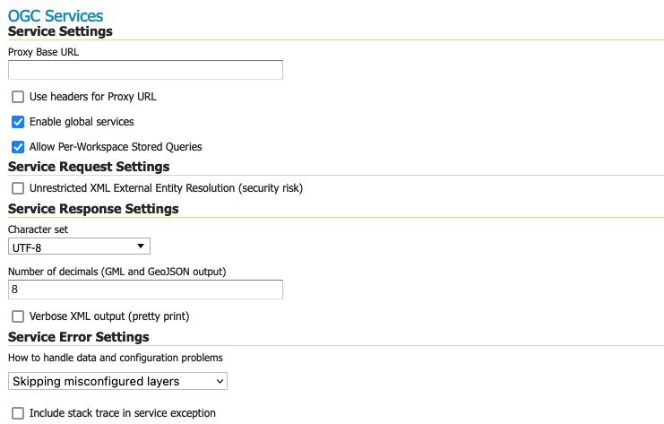
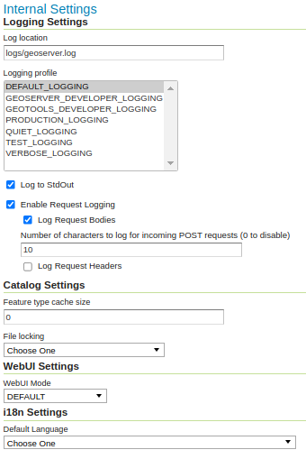

Global Settings
The Global Setting page configures messaging, logging, character, and proxy settings for the entire server.
OGC Services
Global Settings are used to configure how OGC Web Services function.

Global Settings Service ConfigurationService Settings
Proxy Base URL
GeoServer can have the capabilities documents report a proxy properly. "The Proxy Base URL" field is the base URL seen beyond a reverse proxy.
The Proxy Base URL field support environment parametrization (see Parameterize catalog settings ) by activating the JVM parameter:
-DALLOW_ENV_PARAMETRIZATION=true
Once activated the environment parametrization Proxy Base URL can be parameters placeholders like:
${proxy.base.url}
Use headers for Proxy URL
Checking this box allows a by-request modification of the proxy URL using templates (templates based on HTTP proxy headers).
The supported proxy headers are:
- X-Forwarded-Proto The protocol used by the request
- X-Forwarded-Host The hostname and port of the proxy URL
- X-Forwarded-For The client IP address
- X-Forwarded-Path The path of the proxy URL (this is not an official HTTP header, although it is supported by some web-servers)
- Forwarded Header that supersedes the "X-Forwarded-*" headers above. It has these components: "by", "for", "host", "proto", "path" (this component is not official, but added for consistency with
X-Forwarded-Path) - Host Same as
X-Forwarded
For instance, to allow different protocols (http and https) and different hostnames, the proxy base URL field may be changed to: ${X-Forwarded-Proto}://${X-Forwarded-Host}/geoserver The use of the Forwarded header is a tad more complex, as its components have to be referenced in templates with the dot-notation, as in: {Forwarded.proto}://${Forwarded.host}/geoserver.
Multiple templates can be put into the "Proxy Base URL". These templates provide fall-backs, since only the first one that is fully matched is used. For instance, a Proxy Base URL of http://${X-Forwarded-Host}/geoserver http://www.foo.org/geoserver (note: templates are space-separated) can result in either: http://www.example.com/geoserver (if X-Forwarded-Host is set to www.example.com) or http://www.foo.org/geoserver (if X-Forwarded-Host is not set.)
Both header names and the appended path (e.g. /geoserver) in templates are case-insensitive.
When environment parametrization is activated with headers support for Proxy URL, the order of evaluation is:
- Environment parametrization placeholders replacement (if placeholder is not found on environment variables, it remains untouched).
- Headers placeholders replacements.
Enable Global Services
When enabled, allows access to both global services and virtual services. When disabled, clients will only be able to access virtual services. Disabling is useful if GeoServer is hosting a large number of layers and you want to ensure that client always request limited layer lists. Disabling is also useful for security reasons.
Allow Per-Workspace Stored Queries
When enabled, allows to persist Stored queries per workspace, making queries created inside a workspace available in the workspace virtual service only.
Service Request Settings
Unrestricted XML External Entity Resolution
XML Requests sent to GeoServer can include references to other XML documents. Since these files are processed by GeoServer the facility could be used to access files on the server, which is a security concern.
-
Enable the Unrestricted XML External Entity Resolution option when using the application schema extension to allow use of local XSD definition.
This option disables all other External Entity Resolution restrictions (see External Entities Resolution)
Service Response Settings
Character Set
Specifies the global character encoding that will be used in XML responses. Default is UTF-8, which is recommended for most users. A full list of supported character sets is available on the IANA Charset Registry.
Number of Decimals
Refers to the number of decimal places returned in a GML GetFeature response. Also useful in optimizing bandwidth. Default is 8.
Verbose XML output
Verbose Messages, when enabled, will cause GeoServer to return XML with newlines and indents.
Because such XML responses contain a larger amount of data, and in turn requires a larger amount of bandwidth, it is recommended to use this option only for testing purposes.
Service Error Settings
How to handle data and configuration problems
This setting determines how GeoServer will respond when a layer becomes inaccessible for some reason.
By default, when a layer has an error (for example, when the default style for the layer is deleted), a service exception is printed as part of the capabilities document, making the document invalid. For clients that rely on a valid capabilities document, this can effectively make a GeoServer appear to be "offline".
An administrator may prefer to configure GeoServer to simply omit the problem layer from the capabilities document, thus retaining the document integrity and allowing clients to connect to other published layers.
There are two options:
-
OGC_EXCEPTION_REPORT: This is the default behavior. Any layer errors will show up as Service Exceptions in the capabilities document, making it invalid.
-
SKIP_MISCONFIGURED_LAYERS: With this setting, GeoServer will elect simply to not describe the problem layer at all, removing it from the capabilities document, and preserving the integrity of the rest of the document.
Note that having a layer "disappear" may cause other errors in client functionality.
This is the default setting starting with GeoServer 2.11 and allows for faster startups, as the stores connectivity does not need to be checked in advance.
Include stack trace in service exceptions
Verbose exception reporting returns service exceptions with full java stack traces (similar to how they appear in geoserver log file).
By default, this setting is disabled, and GeoServer returns single-line error messages.
This setting is only recommended for local troubleshooting and debugging. The excessive level of detail, can act as security vulnerability (for example a file not found exception revealing folder structure of your server).
Internal Settings
Global Settings are also used to control the GeoServer application as a whole.

Global Settings Internal ConfigurationLogging Settings
Log Location
Sets the written output location for the logs. A log location may be a directory or a file, and can be specified as an absolute path (e.g., C:\GeoServer\GeoServer.log) or a relative one (for example, geoserver.log). Relative paths are relative to the GeoServer data directory. Default is logs/geoserver.log.
This Log location setting can be overridden by GEOSERVER_LOG_LOCATION property, see Advanced log configuration <logging.rst>`_ for details (this setting is applied FileAppender or RollingFilegeoserverlogfileappender). .. _config_globalsettings_log_profile: Logging Profile ''''''''''''''' Select a **Logging profile** to determine the amount of detail GeoServer logs during operation. The built-in logging profiles available on the global settings page are: * **Default Logging** (DEFAULT_LOGGING) — Provides a good mix of detail without being too verbose. Default logging enablesCONFIGandINFOmessages, with a few (chatty) GeoServer and GeoTools packages reduced toWARN. This logging level is useful for seeing the incoming requests to GeoServer in order to double check that requests being received have been parsed correctly. * **GeoServer Developer Logging** (GEOSERVER_DEVELOPER_LOGGING) - A verbose logging profile that includesDEBUGinformation for GeoServer activities. This developer profile is recommended for active debugging of GeoServer. * **GeoTools Developer Logging** (GEOTOOLS_DEVELOPER_LOGGING) - A verbose logging profile that includesDEBUGmessages for the GeoTools library. This developer profile is recommended for active debugging of GeoTools. This is especially good for troubleshooting rendering and data access issues. * **Production Logging** (PRODUCTION_LOGGING) - Minimal logging profile, with onlyWARNlog messages. With production level logging, only problems are written to the log files. * **Quiet Logging** (QUIET_LOGGING) - Turns off logging. * **Verbose Logging** (VERBOSE_LOGGING) - Provides more detail by enablingDEBUGmessages. This profile is only useful when troubleshooting. Each profile corresponds to a log4j configuration file in the GeoServer data directory (Apachelog4j \<https://logging.apache.org/log4j/2.x/>\_ is a Java-based logging utility). Additional customized profiles can be added by copying one of the built-in profiles above, in the \*\*````ogs** folder, and editing the log4j file. Use of log4j can be disabled using RELINQUISH_LOG4J_CONTROL property. See Advanced log configuration for more information.
Log to StdOut
Standard output determines where a program writes its output data. In GeoServer, the Log to StdOut setting enables logging to the text terminal that initiated the program.
If you are running GeoServer in a large J2EE container, you might not want your container-wide logs filled with GeoServer information. Clearing this option will suppress most GeoServer logging, with only FATAL exceptions still output to the console log.
This setting can be overridden by system property, see Advanced log configuration <logging.rst>`_ for details (this setting removes Consolestdoutappender). .. _config_globalsettings_log_request: Enable Request Logging '''''''''''''''''''''' These settings enable the logging of the requested URL, and optionally request headers and the POST requests' contents, for all requests sent to GeoServer. * **Enable Request Logging**: Select to enable logging of incoming requests, this will include the operation (GET,POST,etc...) and the URL requested. * **Log Request Bodies**: Select to enable logging the body of the incoming request. Text content will be logged, or the number of bytes for binary content, based on the setting Number of characters to log for incoming requests setting below. * **Number of characters to log for incoming POST requests**: In more verbose logging levels, GeoServer will log the body of incoming requests. It will only log the initial part of the request though, since it has to store (buffer) everything that gets logged for use in the parts of GeoServer that use it normally. This setting sets the size of this buffer, in characters. A setting of **0** will disable logging the body of the request. * **Log Request Headers**: Select to enable logging of request header information. We recommend leaving these settings disabled in day to day operations. For more information on applying these settings and their use in troubleshooting see `troubleshooting <../production/troubleshooting.rst#troubleshooting_requests>`_. Catalog Settings ^^^^^^^^^^^^^^^^ .. _config_globalsettings_type_cache: Feature type cache size ''''''''''''''''''''''' GeoServer can cache datastore connections and schemas in memory for performance reasons. The cache size should generally be greater than the number of distinct featuretypes that are expected to be accessed simultaneously. If possible, make this value larger than the total number of featuretypes on the server, but a setting too high may produce out-of-memory errors. On the other hand, a value lower than the total number of your registered featuretypes may clear and reload the resource-cache more often, which can be expensive and e.g. delay WFS-Requests in the meantime. The default value for the Feature type cache size is 100. .. _config_globalsettings_locking: File Locking '''''''''''' This configuration settings allows control of the type of file locking used when accessing the GeoServer Data Directory. This setting is used to protect the GeoServer configuration from being corrupted by multiple parties editing simultaneously. File locking should be employed when using the REST API to configure GeoServer, and can protected GeoServer when more than one administrator is making changes concurrently. There are three options: * **NIO File locking**: Uses Java New IO File Locks suitable for use in a clustered environment (with multiple GeoServers sharing the same data directory). * **In-process locking**: Used to ensure individual configuration files cannot be modified by two web administration or REST sessions at the same time. * **Disable Locking**: No file locking is used. WebUI Settings ^^^^^^^^^^^^^^ .. _config_globalsettings_webui: WebUI Mode '''''''''' This configuration setting allows control over WebUI redirecting behaviour. By default, when the user loads a page that contains input, a HTTP 302 Redirect response is returned that causes a reload of that same with a generated session ID in the request parameter. This session ID allows the state of the page to be remembered after a refresh and prevents any occurrence of the 'double submit problem'. However, this behaviour is incompatible with clustering of multiple geoserver instances. There are three options: * **DEFAULT**: Use redirecting unless a clustering module has been loaded. * **REDIRECT**: Always use redirecting (incompatible with clustering). * **DO_NOT_REDIRECT**: Never use redirecting (does not remember state when reloading a page and may cause double submit). Note that a restart of GeoServer is necessary for a change in the setting to have effect. Other Settings -------------- Additional settings for GeoServer: .. code-block:: raw_markdown  Other settings ^^^^^^^^^^^^^^ .. _config_globalsettings_rest_notfound: REST Disable Resource not found Logging ''''''''''''''''''''''''''''''''''''''' This parameter can be used to mute exception logging when doing REST operations and the requested Resource is not present. This default setting can be overridden by adding to a REST call the following parameter: **quietOnNotFound=true/false**. .. _config_globalsettings_rest_root_dir: REST PathMapper Root directory path ''''''''''''''''''''''''''''''''''' This parameter is used by the RESTful API as theRoot Directory``for the newly uploaded files, following the structure:
${rootDirectory}/workspace/store[/<file>]
Display creation timestamps on administration lists
These check boxes can be used to toggle Date of Creation on Workspaces, Stores, Layers, Layer Groups and Styles administration list pages.
Time of Creation can be seen by hovering the mouse cursor over the dates.
Display modification timestamps on administration lists
These check boxes can be used to toggle Date of Modification on Workspaces, Stores, Layers, Layer Groups and Styles administration list pages.
Time of Modification can be seen by hovering the mouse cursor over the dates.
Match URLs with trailing slash
This setting determine whether GeoServer matches URLs whether or not the request has a trailing slash. If enabled a request mapped to \"/ogc/collections\" also matches \"/ogc/collections/\". A restart is required for a change to this setting to take effect.
Note that trailing slash matches may be removed entirely in future versions of GeoServer due to introduced ambiguities that can lead to security vulnerabilities. Discussion of the issue can be found in this Spring issue.